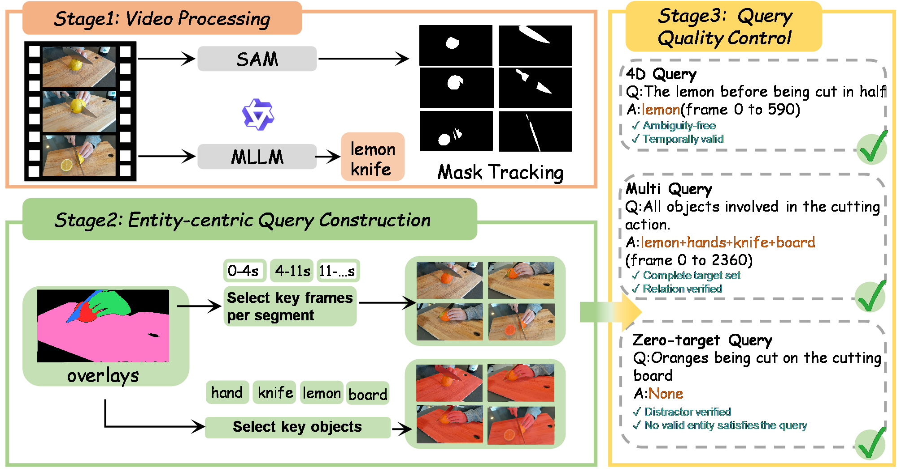
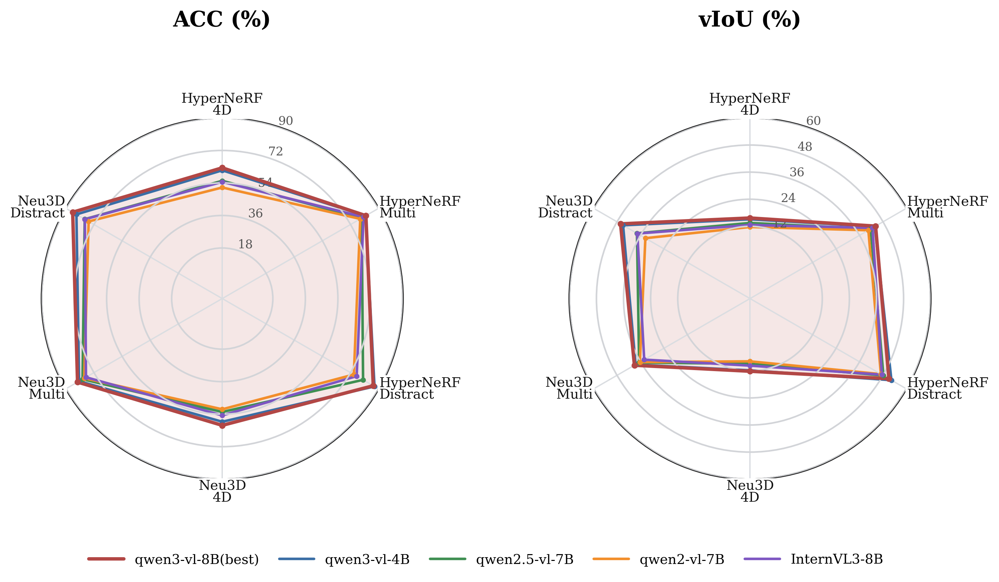
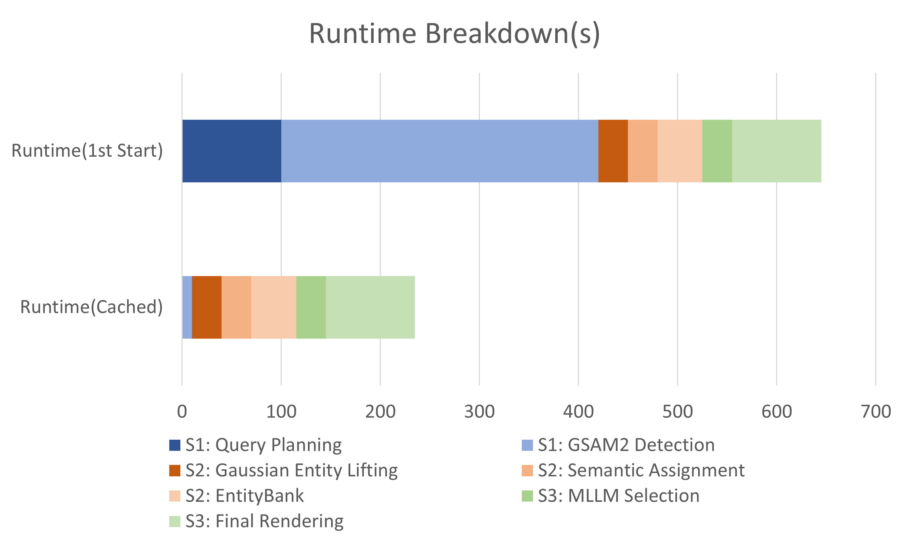

Figure 1. ReferGaussian performs training-free referring inference over frozen 4D Gaussian scenes for temporally varying, multi-target, reasoning-intensive, and zero-target queries.
Accepted at ACM MM 2026
Figure 1. ReferGaussian performs training-free referring inference over frozen 4D Gaussian scenes for temporally varying, multi-target, reasoning-intensive, and zero-target queries.
Benchmark
The paper reports 12 dynamic scenes and 266 sentence queries. The currently released frame-aligned dense tier contains 12 scenes and 89 English queries; paper-reported and executable release protocols are tracked separately.

Benchmark overview. R4D-Bench-QA statistics: expression word cloud, query composition, and token-length distribution.
Method
A frozen 4DGS scene, mask-supported Gaussian entities, and a Qwen-based Refer-Planner form three explicit referring stages.
Grounded-SAM2 tracks candidate entities across time and provides mask evidence for Gaussian-to-entity association.
A shared scene-level Gaussian trajectory bank supports query-conditioned entity construction and semantic assignment.
The Refer-Planner decomposes language constraints and selects final referents from EntityBank without scene-specific retraining.
Results
Reported accepted-paper referring segmentation results on R4D-Bench-QA and the public HyperNeRF split.
Table 1. Referring segmentation on R4D-Bench-QA.
| Method | Acc ↑ | vIoU ↑ |
|---|---|---|
| Segment then Splat | 55.6 | 28.4 |
| 4D LangSplat | 58.4 | 32.1 |
| ReferGaussian (Ours) | 76.5 | 34.4 |
Table 2. Generalization on the 3-scene / 7-query 4D LangSplat HyperNeRF split.
| Method | Acc ↑ | vIoU ↑ |
|---|---|---|
| LangSplat | 54.27 | 24.13 |
| Deformable CLIP | 65.01 | 45.37 |
| Non-Status Field | 84.58 | 62.00 |
| 4D LangSplat | 88.86 | 66.14 |
| ReferGaussian (Ours) | 91.62 | 66.48 |
Table 3. Module ablation on R4D-Bench-QA.
| Variant | Acc ↑ | vIoU ↑ |
|---|---|---|
| Gaussian backbone only | 62.9 | 31.5 |
| w/o Stage 1 static segmentation | 48.6 | 17.2 |
| w/o Stage 2 semantic assignment | 62.9 | 29.8 |
| w/o Stage 3 spatio-temporal reasoning | 36.0 | 26.1 |
| ReferGaussian (full) | 76.5 | 34.4 |
Analysis
Additional analyses summarize benchmark construction, MLLM sensitivity, and end-to-end efficiency.

Benchmark construction. R4D-Bench-QA annotates target entity sets, valid temporal windows, and spatiotemporal masks for dynamic referring queries.

MLLM sensitivity. Six-axis radar plots compare referring performance under multiple vision-language backbones.

Efficiency breakdown. Runtime, memory, and MLLM-call statistics show first-start and cached-query costs.
Qualitative
Qualitative grounding on temporal-state and exclusion queries, followed by additional examples.

Qualitative comparison. Query-conditioned grounding on challenging R4D-Bench-QA cases.

Additional examples. Qualitative results across multi-target, reasoning-intensive, and zero-target settings.
Citation
Please cite our ACM Multimedia 2026 paper.
@inproceedings{chen2026r4dgs,
title = {R4DGS: Referring Segmentation in 4D Gaussian Splatting},
author = {Bangpu Chen and Yaxuan Li and Shirui Peng and Xiangtian Si and Liuxin Chu and Xitong Cao and Hongbo Jin and Jiayu Ding},
booktitle = {Proceedings of the 34th ACM International Conference on Multimedia},
year = {2026},
doi = {10.1145/3767308.3836021}
}